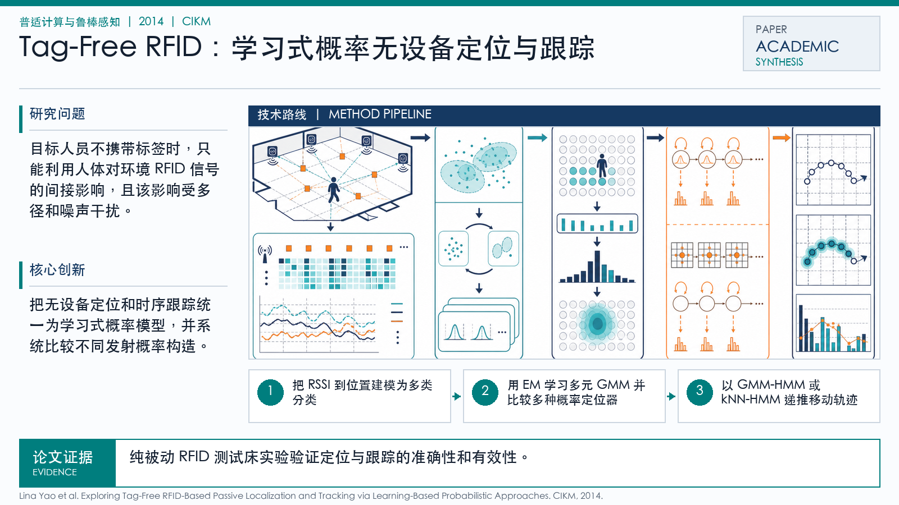

Problem
解决的问题
目标人员不携带标签时，只能利用人体对环境 RFID 信号的间接影响，且该影响受多径和噪声干扰。
Pervasive Computing and Robust Sensing · 2014 · CIKM
Exploring Tag-Free RFID-Based Passive Localization and Tracking via Learning-Based Probabilistic Approaches
Problem
目标人员不携带标签时，只能利用人体对环境 RFID 信号的间接影响，且该影响受多径和噪声干扰。
Value
纯被动 RFID 测试床实验验证定位与跟踪的准确性和有效性。
Paper-grounded Academic Summary
该代表页依据原文摘要、贡献段与方法图注生成。方法视觉由 ImageGen 按论文证据逐篇绘制，中文研究问题、技术路线、创新点与实验结论采用确定性排版，以保证内容与字符准确。
打开原文 PDF
Technical Route
Innovation